La tienda: lo que vendes en el colmado. Lleva la mercancía que hay, lo que vendes, lo que fías y lo que ganas.
La lotería: igual que en tu libreta. Anotas quién jugó y cuánto, los premios que pagas, tu comisión del día y lo que tienes que entregar.
Todo se calcula solo: no tienes que sumar a mano.
1. Instalar la app en el iPad
Abre Safari (tiene que ser Safari) y entra a jean-carlos-declama.github.io/martina.
Toca el botón Compartir (el cuadrito con la flecha hacia arriba).
Toca Agregar a pantalla de inicio y luego Agregar.
Desde ahora ábrela siempre desde el ícono morado «Martina», no desde Safari.
Funciona sin internetSolo necesitas internet para mandar cosas por WhatsApp, para recibir las actualizaciones y para que se pasen los datos a los otros equipos.
Cuando haya algo nuevoAbajo sale «Hay una versión nueva de Martina». Toca Actualizar ahora cuando no estés a mitad de una venta. No se pierde nada.
2. La primera vez
La primera vez que abres la app sale la bienvenida. Se hace una sola vez:
Escribe el nombre del negocio, tu nombre y tu comisión de la lotería (el % que te ganas de lo que vendes de lotería en el día). Se puede cambiar después.
Toca Siguiente: crear mi PIN.
Escoge un PIN de 4 a 6 números, tócalo en el teclado y toca ✓. Luego ponlo otra vez para confirmar.
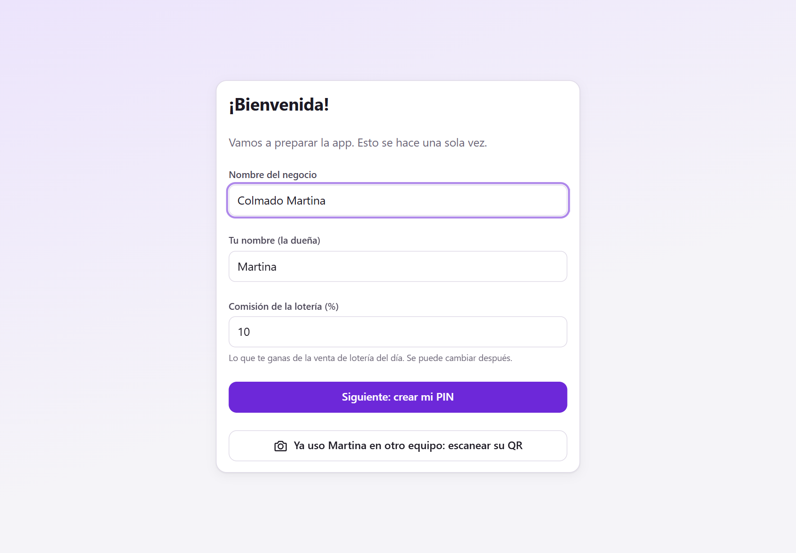
La bienvenida.
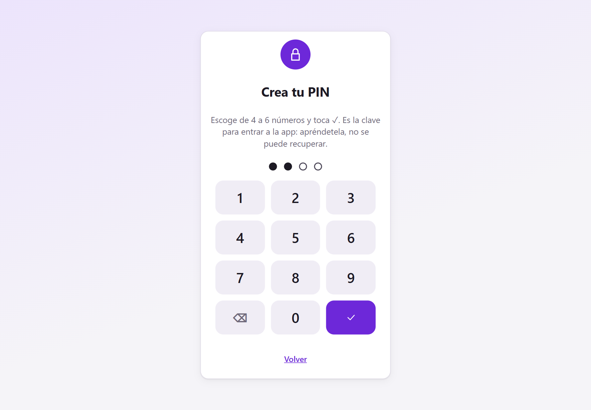
Crear el PIN con el teclado de la app.
Apréndete el PINEs la clave para entrar a la app y no se puede ver ni recuperar. Si se te olvida, avísale a Jean Carlos.
¿Ya tienes Martina en otro equipo?Entonces no la prepares de nuevo. En la bienvenida toca Ya uso Martina en otro equipo: escanear su QR (ver el capítulo 12).
3. Entrar con tu PIN
Cada vez que abres la app, te pide el PIN. Si hay varias personas, primero tocas tu nombre.
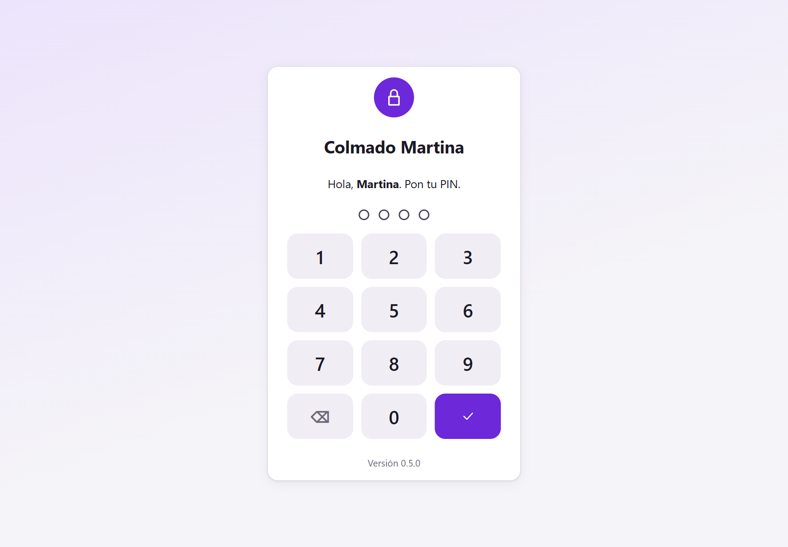
Pon tu PIN y toca ✓.
Si nadie la toca en 10 minutos, se bloquea sola, para que un cliente no vea ni toque nada. Ese tiempo se cambia en Ajustes.
Para bloquearla tú misma, toca Bloquear en el menú.
Si alguien pone un PIN equivocado 5 veces, la app espera 30 segundos.
4. Inicio
Es el resumen de tu día:
Lotería de hoy: venta, tu comisión, premios pagados y lo que tienes que entregar.
Tienda hoy: lo vendido, la ganancia y lo que te deben de fiado.
Hay que reponer: productos agotados (rojo) o con poca existencia (amarillo).
Los botones Anotar lotería y Vender te llevan directo.
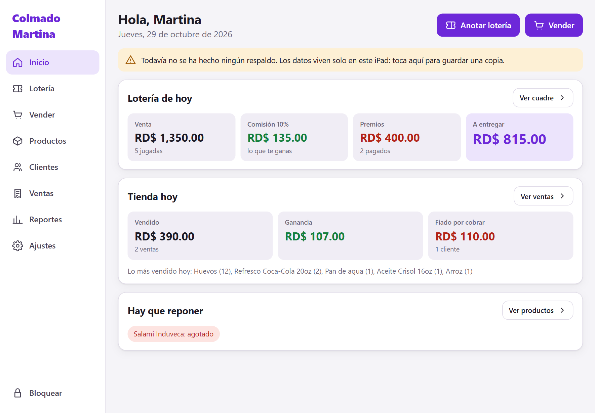
La pantalla de inicio.
El menú de la izquierda (abajo si tienes el iPad de pie) lleva a cada parte de la app.
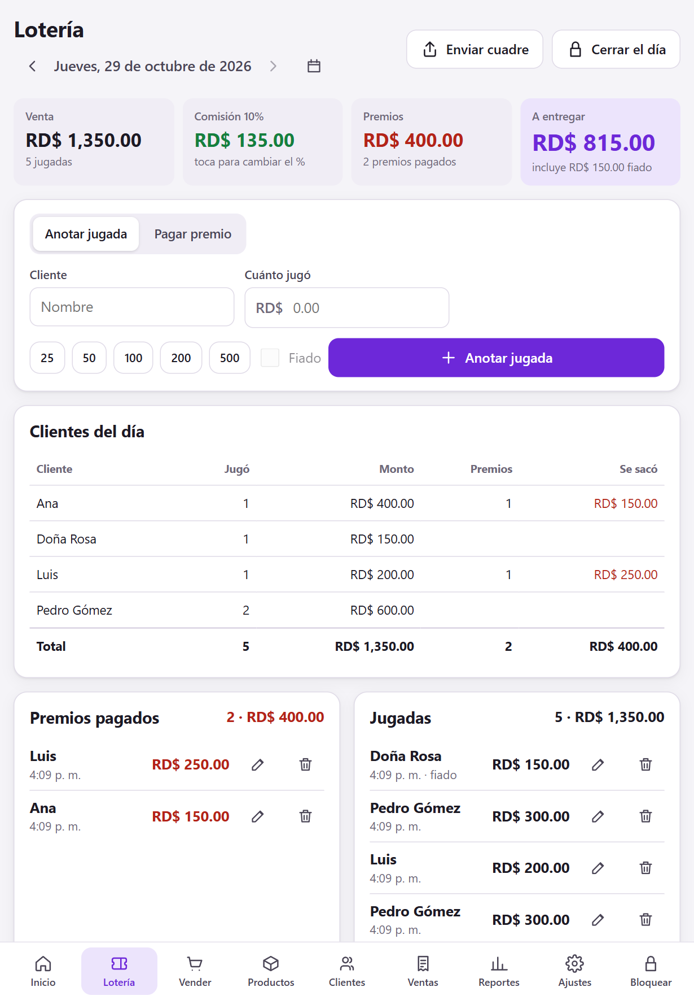
Con el iPad de pie, el menú queda abajo.
5. Lotería: anotar jugadas y premios
Es tu libreta de la lotería. Arriba ves los cuatro números del día:
Venta
Todo lo que jugaron hoy (y cuántas jugadas).
Comisión
Lo que te ganas: el % de la venta del día.
Premios
Lo que pagaste a los que se sacaron algo.
A entregar
Venta − comisión − premios. Es lo que entregas. Si da negativo, sale en rojo como «Faltante».
Anotar una jugada
En Anotar jugada, escribe el nombre del cliente. La app te sugiere los nombres que ya usaste.
Escribe cuánto jugó, o toca un botón rápido (25, 50, 100, 200, 500).
Si se lo fías, marca Fiado. Solo se puede con clientes registrados, y se le suma a su cuenta.
Toca Anotar jugada.
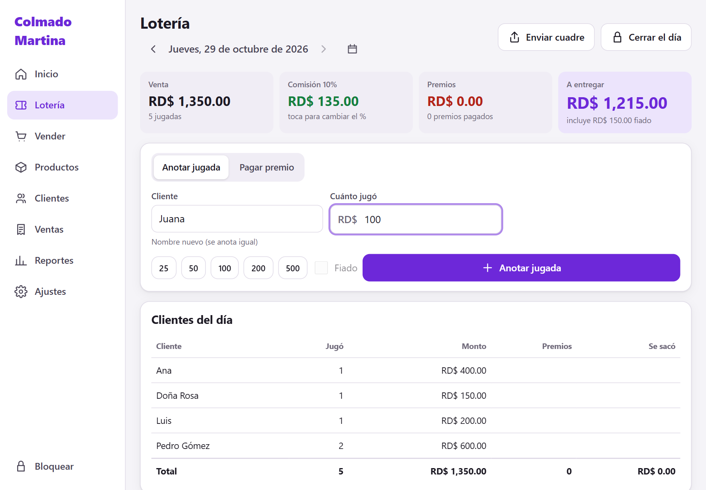
Anotando una jugada.
Pagar un premio
Toca la pestaña Pagar premio.
Escribe quién se lo sacó y cuánto se sacó.
Toca Pagar premio. Se paga del dinero del día y se resta de lo que entregas.
Si se sacaron premios varias personas (por ejemplo 10, 15 y 25), anota cada una. En «Premios pagados» ves cuántos premios hubo y el total.
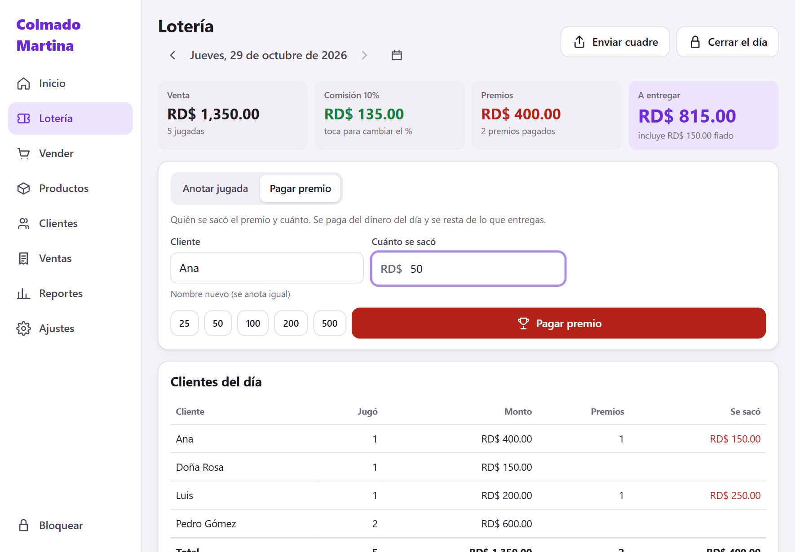
Pagando un premio.
6. Lotería: el cuadre y cerrar el día
Más abajo está «Clientes del día», tu libreta: cada cliente con cuántas veces jugó, cuánto, cuántas veces cobró premio y cuánto cobró. Al final, el total.
Debajo están las listas «Premios pagados» y «Jugadas», cada una con cuántas son y el total. Si anotaste algo mal:
toca el lápiz para corregirlo (quién o cuánto): el cuadre y lo que entregas se recalculan solos;
toca la basurita para anularlo.
Las dos cosas piden el PIN de la dueña.
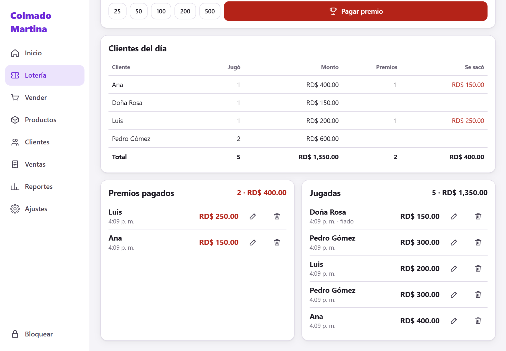
Clientes del día, premios pagados y jugadas.
Ejemplo como en la libreta
Venta del día
RD$ 1,000.00
Comisión 10 % (lo que te ganas)
− RD$ 100.00
Premios pagados
− RD$ 200.00
A entregar
RD$ 700.00
Cuando los premios pasan la venta (faltante)
Si vendiste 100, tu comisión es 20 y alguien se sacó 120, la cuenta da 100 − 20 − 120 = −40. La app lo muestra en rojo como «Faltante»: es lo que falta, no lo que entregas.
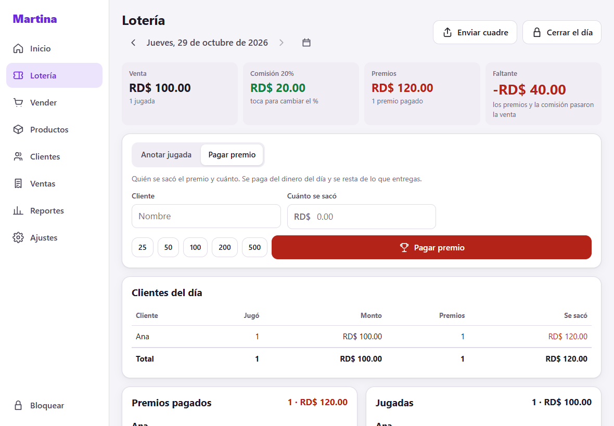
Un día con faltante.
Volver a un día anterior para corregir
Si el cuadre del lunes quedó mal, puedes volver a ese día y anotar lo que faltó:
Usa la flecha ‹ al lado de la fecha, o toca el calendario y escoge el día. Con Hoy vuelves.
Si ese día está cerrado, la dueña lo abre con Reabrir para corregir.
Anota la jugada o el premio como siempre. Arriba sale un aviso amarillo para que sepas que no estás en hoy.
Cuando termines, cierra ese día otra vez.
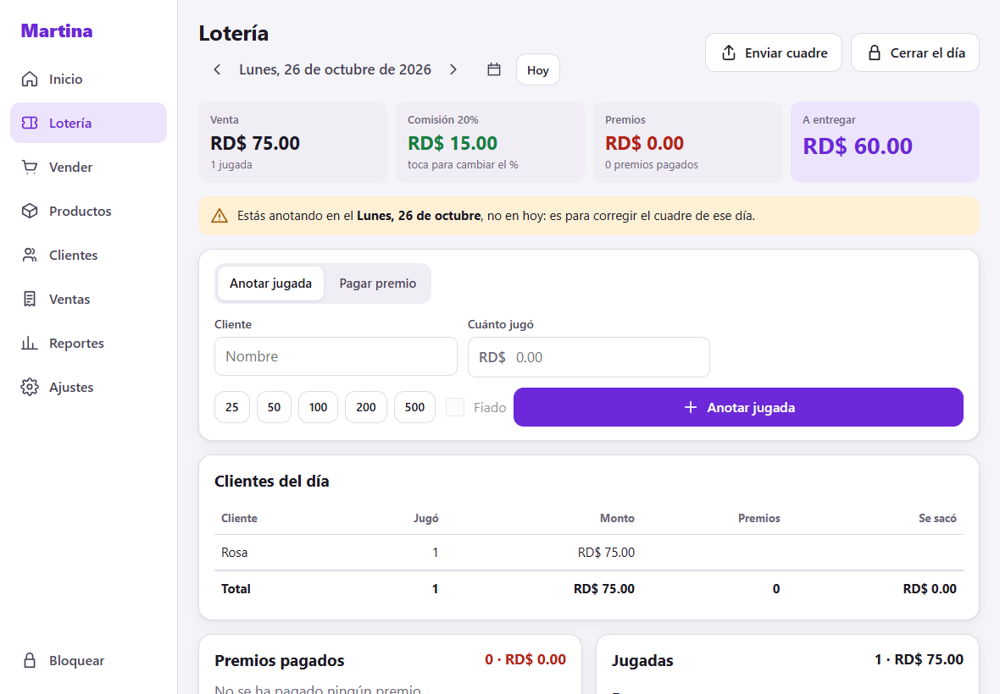
Anotando en el lunes para corregir su cuadre.
Otras cosas de esta pantalla
Cambiar la comisión de un día: toca el cuadro de la comisión. El % que pongas en Ajustes es el que usa cada día nuevo.
Mandar el cuadre:Enviar cuadre lo manda por WhatsApp (o lo que escojas) con cada cliente y los totales.
Cerrar el día
Al terminar, toca Cerrar el día. Te muestra el resumen y, si estás de acuerdo, lo cierra. Un día cerrado ya no se puede cambiar: no se anota ni se anula nada en él. Si hay que corregir algo, la dueña lo puede Reabrir para corregir y tiene que escribir el porqué.
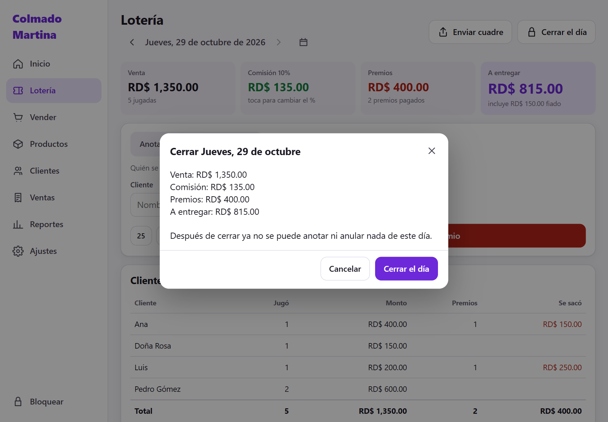
Confirmar el cierre del día.
La tienda va aparteCerrar la lotería no frena las ventas de la tienda.
7. Vender en la tienda
En Vender, toca los productos para ir agregándolos a la venta (a la derecha). Cada toque suma uno.
Para buscar, escribe en «Buscar o escanear producto».
Para el código de barras:
toca Escanear y pon el código frente a la cámara, o
si tienes un lector de códigos, solo pásale el producto.
Usa − y + para quitar o agregar uno. Si tocas el nombre de un producto en la venta, puedes poner la cantidad exacta (por ejemplo 1.5 libras), un descuento o quitarlo.
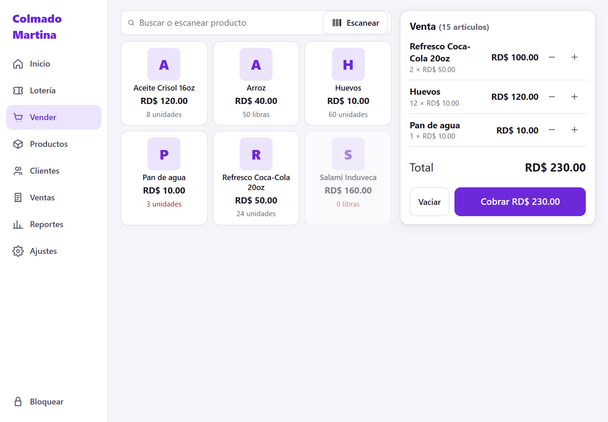
Una venta con tres productos.
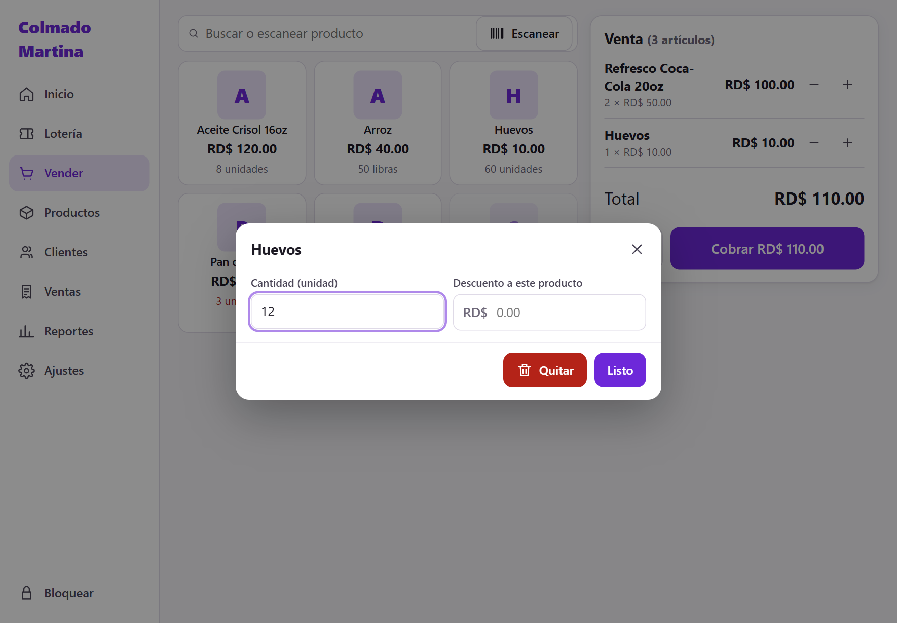
Cantidad exacta o descuento de un producto.
Si queda pocoLa existencia se ve debajo de cada producto. En rojo, queda poco; claritos, están agotados.
7. Vender (cobrar)
Toca Cobrar.
Escoge cómo paga: Efectivo, Transferencia, Tarjeta o Fiado.
Si es efectivo, escribe cuánto te dio: la app te dice la devuelta.
Si quieres, escribe el cliente o un descuento a toda la venta. Para fiar, el cliente tiene que estar registrado.
Toca Cobrar. La mercancía se descuenta sola del inventario.
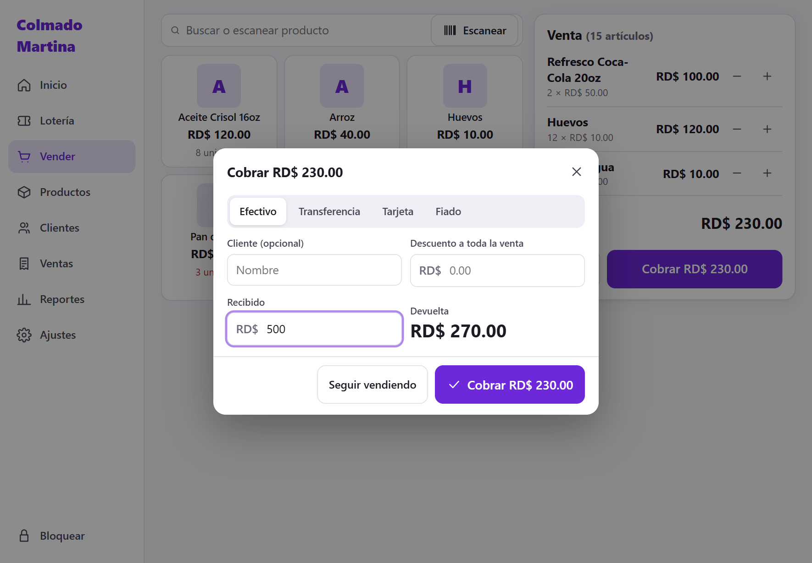
Cobrar: forma de pago y devuelta.
Al final sale el recibo. Lo puedes mandar por WhatsApp (si el cliente tiene teléfono, le llega directo a él) o con Compartir.
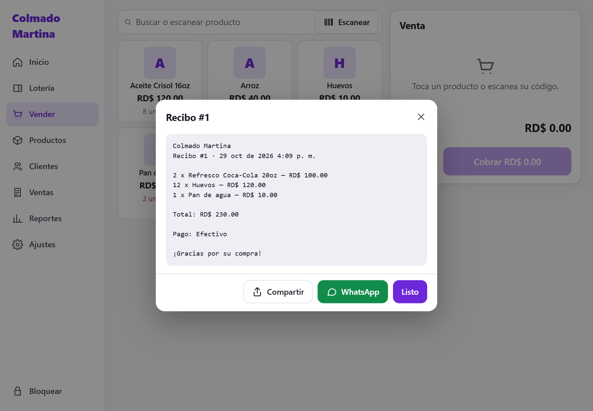
El recibo de la venta.
Tranquila con el doble toqueSi tocas «Cobrar» dos veces sin querer, la venta se cobra una sola vez.
8. Productos e inventario
Aquí está toda tu mercancía, con su precio y cuántos quedan. Arriba puedes ver Todos, los de Poca existencia, los Agotados o los Archivados.
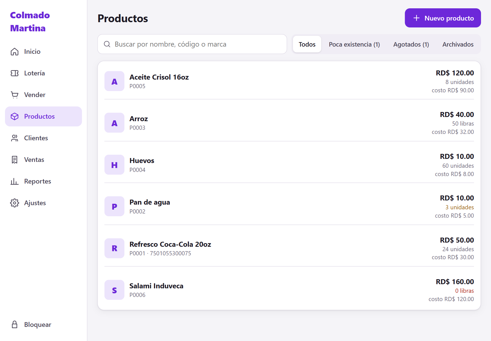
La lista de productos.
Agregar un producto
Toca Nuevo producto.
Ponle nombre, foto (opcional), código de barras (escribirlo o escanearlo), costo (lo que te cuesta) y precio de venta. La app te dice cuánto ganas.
Escoge cómo se vende (unidad, libra, paquete…), cuándo avisarte que queda poco y cuántos hay ahora.
Toca Guardar.
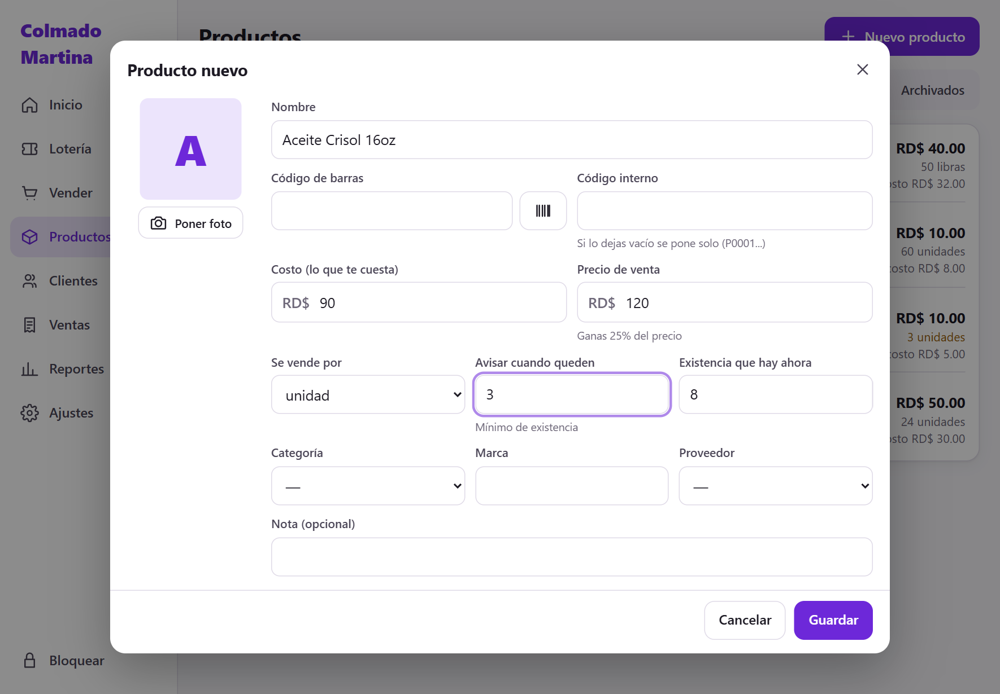
Producto nuevo.
8. Productos: la ficha y la mercancía
Si tocas un producto, ves su ficha: cuánto hay, precio, costo y el historial. En el historial está todo lo que entró y salió: qué pasó, cuánto, cuánto quedó y quién lo hizo.
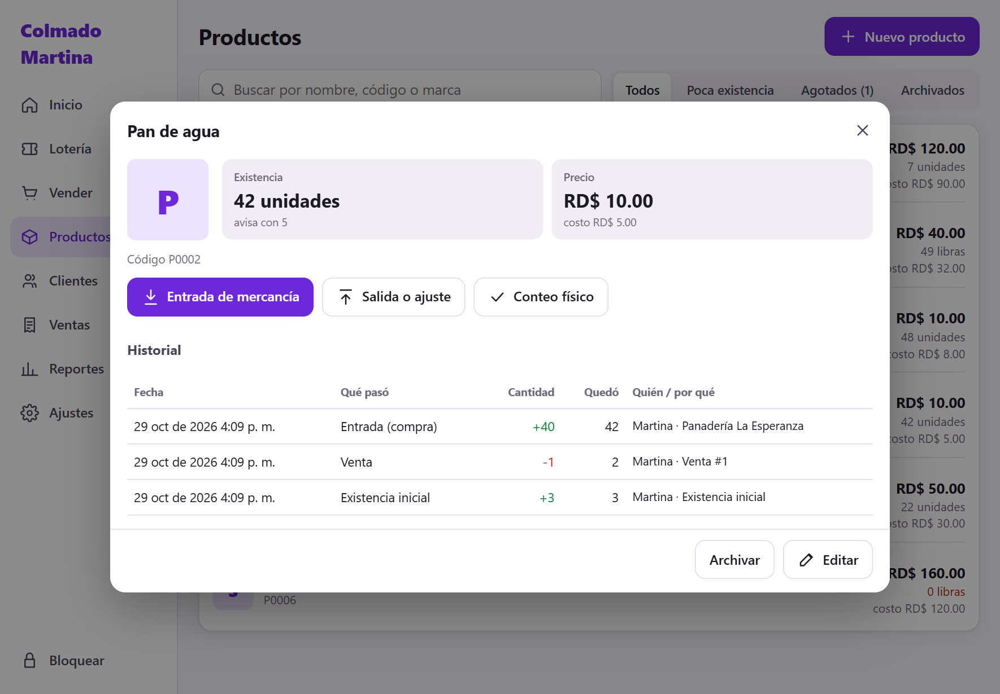
La ficha de un producto con su historial.
Entrada de mercancía: cuando te llega mercancía. Escribe cuánto llegó y el costo de cada uno. Si el costo cambió, la app saca el costo promedio para que la ganancia sea la real.
Salida o ajuste: lo que se dañó o venció, lo que se usó en la casa, lo que devolviste al proveedor, o un ajuste. Siempre pide el motivo.
Conteo físico: cuentas lo que hay de verdad en el colmado y lo escribes. La app corrige la diferencia y la anota.
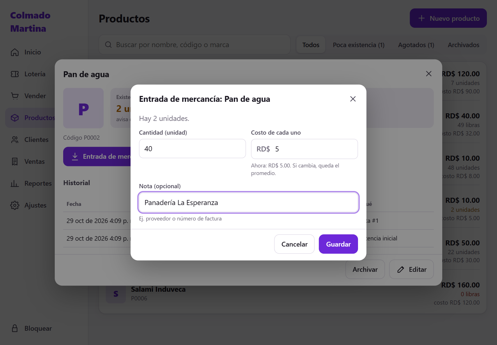
Entrada de mercancía.
¿Por qué no se puede cambiar la existencia a mano?Para que siempre quede escrito qué pasó con cada cosa. Así nada se pierde sin explicación.
9. Clientes y fiado
Registra a los clientes que fían o que juegan seguido. Con Nuevo cliente pones nombre, teléfono (WhatsApp) y, si quieres, un límite de fiado.
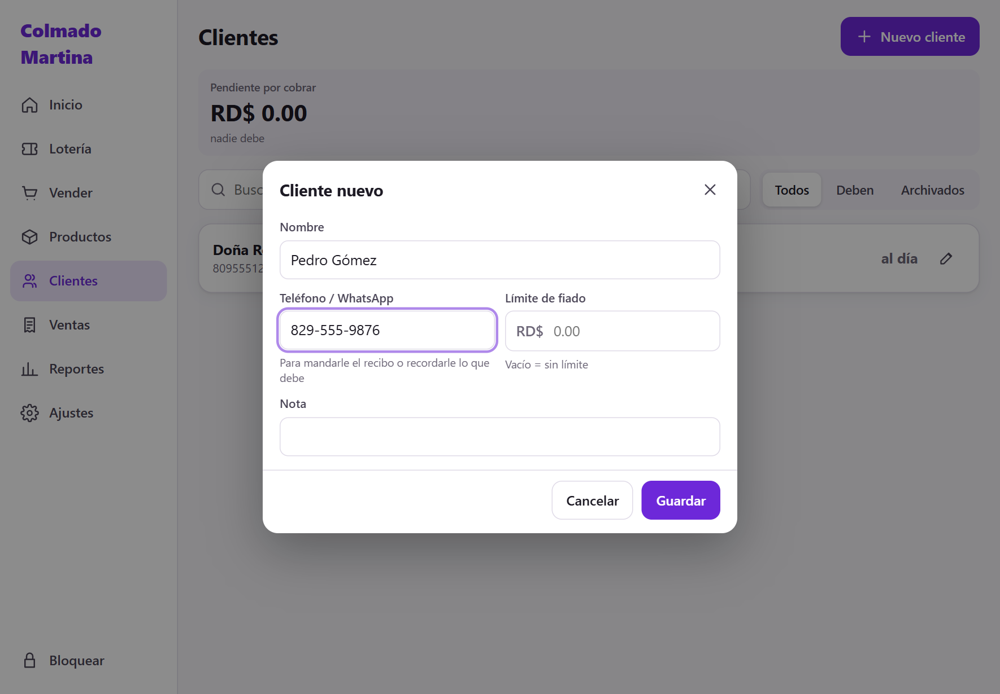
Cliente nuevo.
Si tocas un cliente, ves cuánto debe, lo que jugó en la lotería en los últimos 30 días y su cuenta: cada fiado y cada abono.
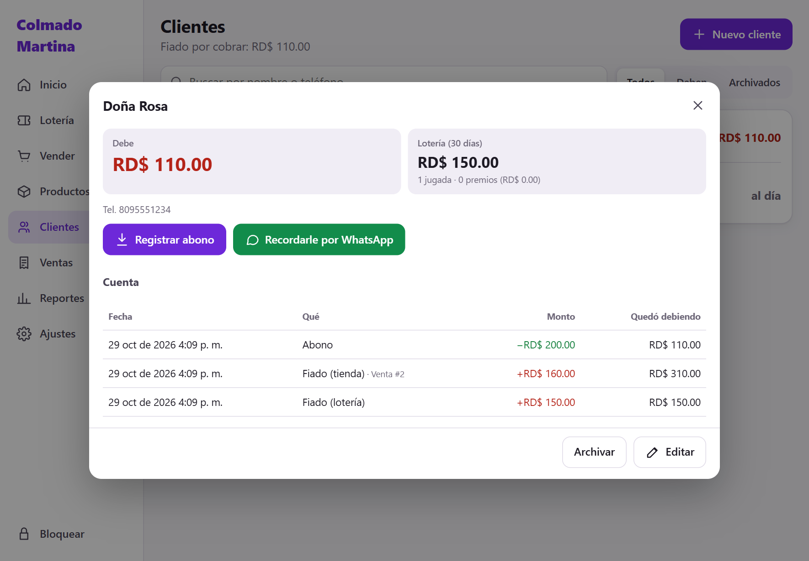
La cuenta de un cliente.
Registrar abono: cuando te paga. Escribe cuánto (o toca «Lo paga todo»).
Recordarle por WhatsApp: le manda un mensaje amable con lo que debe.
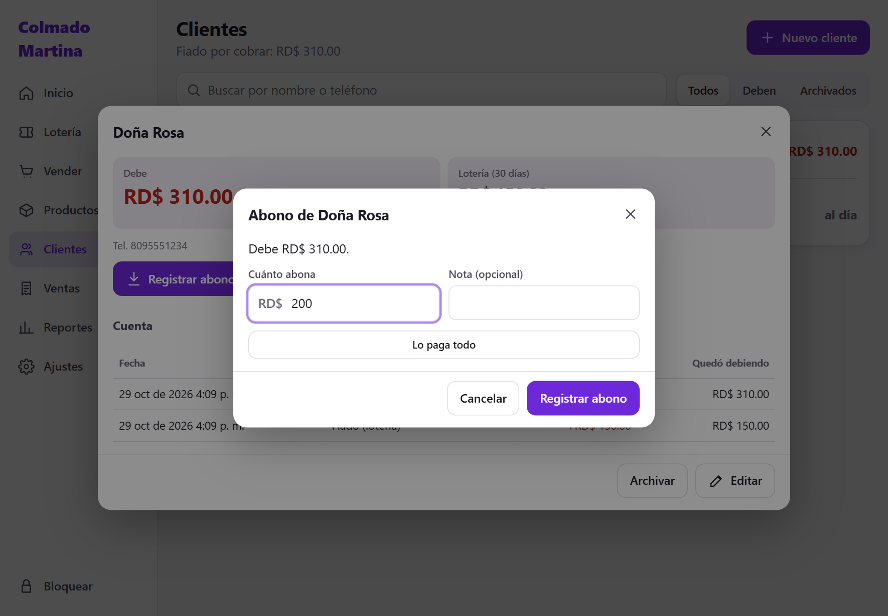
Registrar un abono.
10. Ventas: recibos, anular y devolver
Aquí están las ventas de la tienda de cada día, con el total y cuánto entró por cada forma de pago. Con las flechas cambias de día.
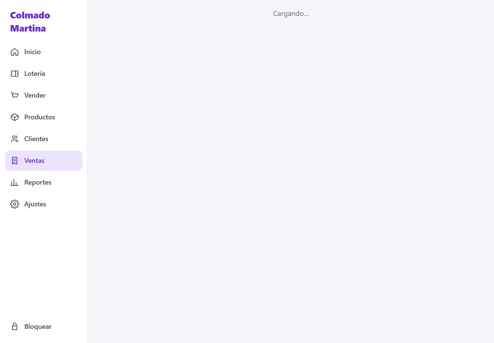
Las ventas del día.
Si tocas una venta, ves su recibo y lo puedes volver a mandar. Desde ahí también:
Devolver productos: si el cliente trae algo. Pones cuántos devuelve; la mercancía vuelve al inventario y el dinero se descuenta de la venta.
Anular venta: si la venta fue un error. Todo vuelve al inventario y, si era fiada, se le quita al cliente.
Las dos piden el PIN de la dueña y el porqué, y quedan anotadas en la bitácora.
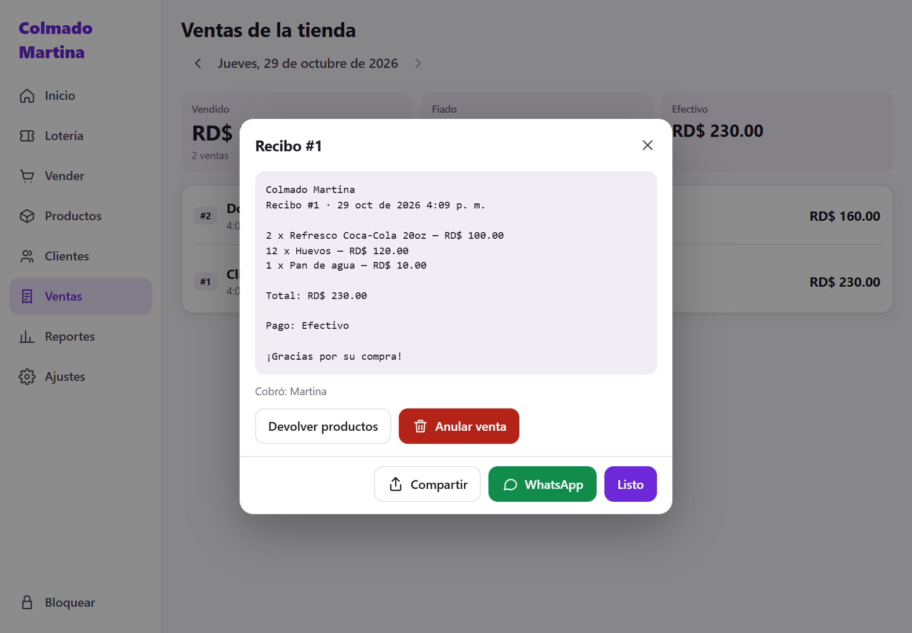
Detalle de una venta.
11. Reportes
Escoge el período: Hoy, Esta semana, Este mes u Otras fechas. Vas a ver:
Lotería: venta, comisión ganada, premios y lo que entregar, día por día.
Tienda: lo vendido, lo que te costó y la ganancia, la venta de cada día y lo que más se vende.
Inventario ahora: cuántos productos hay y cuánto vale la mercancía (al costo y al precio).
Quién debe más: los clientes con más fiado.
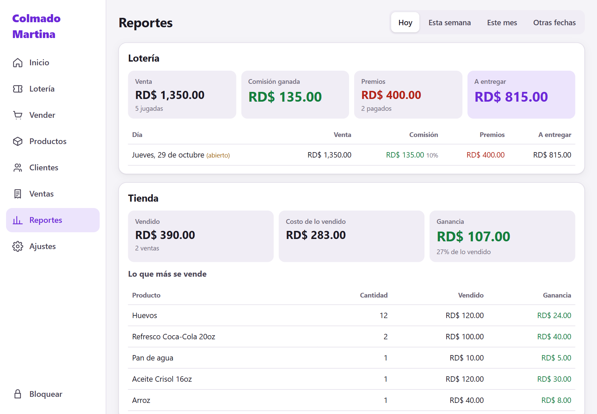
Reportes de hoy.
Los reportes solo los ven la dueña y «solo mirar». El empleado no ve ganancias.
12. Varios equipos: vincular con el QR
Puedes usar Martina en el iPad y en tu teléfono, darle un equipo a un empleado o dejar que Jean Carlos mire los números desde el suyo. Todos ven y anotan lo mismo.
Si no hay internet, sigues trabajando normal: lo anotado se sube solo cuando vuelve.
Además, todo queda guardado en la nube: si se pierde el iPad, no se pierde nada.
Vincular un equipo nuevo
En el equipo nuevo, instala Martina desde Safari (capítulo 1) y ábrela desde el ícono.
En la bienvenida toca Ya uso Martina en otro equipo: escanear su QR.
En tu iPad: Ajustes › Equipos › Mostrar QR para vincular otro equipo (pide tu PIN).
Con el equipo nuevo, escanea ese código y toca Vincular. Baja todo y te pide el PIN.
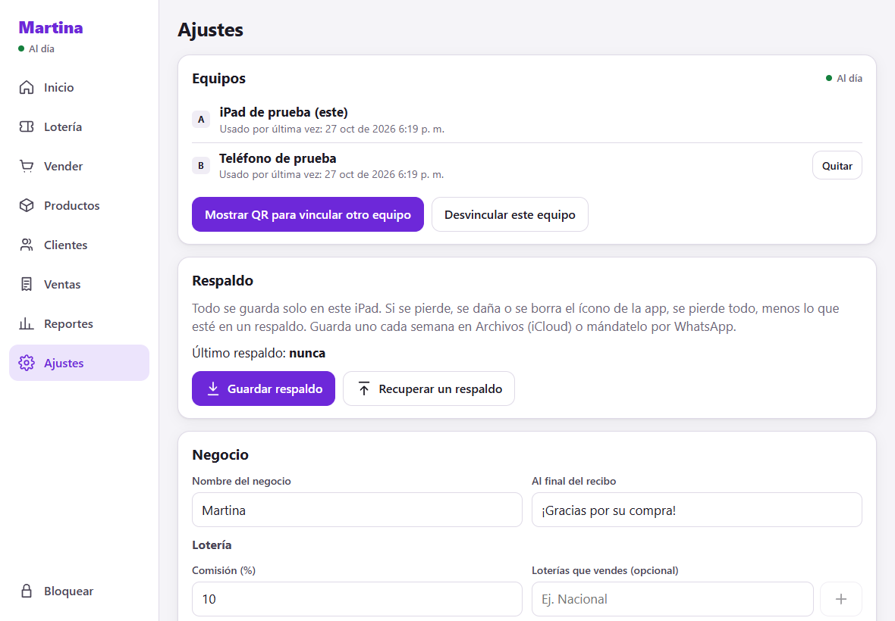
Ajustes › Equipos: los equipos vinculados.
El QR es la llave de tu negocioQuien lo escanee, entra. No le mandes foto del QR a nadie. Muéstralo solo cuando vayas a vincular un equipo.
El código se escanea desde dentro de la app. Si lo escaneas con la cámara normal del iPhone, Safari te explica cómo hacerlo.
En el menú se ve si está «Al día», «Sincronizando…» o «Sin internet».
Cada equipo tiene una letra (A, B…), y sus recibos la llevan: #A-12, #B-3.
Quitar un equipo: si se perdió o era de alguien que ya no trabaja contigo. Cuando ese equipo se conecte, se le borra todo y ya no entra.
13. Ajustes
Equipos: vincular, ver y quitar equipos (capítulo 12).
Respaldo:Guardar respaldo hace un archivo con todo (para guardarlo en Archivos/iCloud o mandártelo por WhatsApp). Recuperar un respaldo pone lo del archivo en lugar de lo que hay. Úsalo con cuidado.
Negocio: el nombre, lo que sale al final del recibo, la moneda (pesos RD$, dólares US$ o euros €; solo cambia el símbolo), tu comisión de lotería, la lista de loterías que vendes (si la pones, al anotar escoges de cuál es y el cuadre las separa), el ITBIS y si se puede vender sin existencia.
Seguridad:Cambiar mi PIN, cada cuánto se bloquea sola, y las personas que usan la app.
Categorías y proveedores: para organizar los productos.
Bitácora: lo último que se hizo y quién lo hizo (anulaciones, cierres, cambios de precio…).
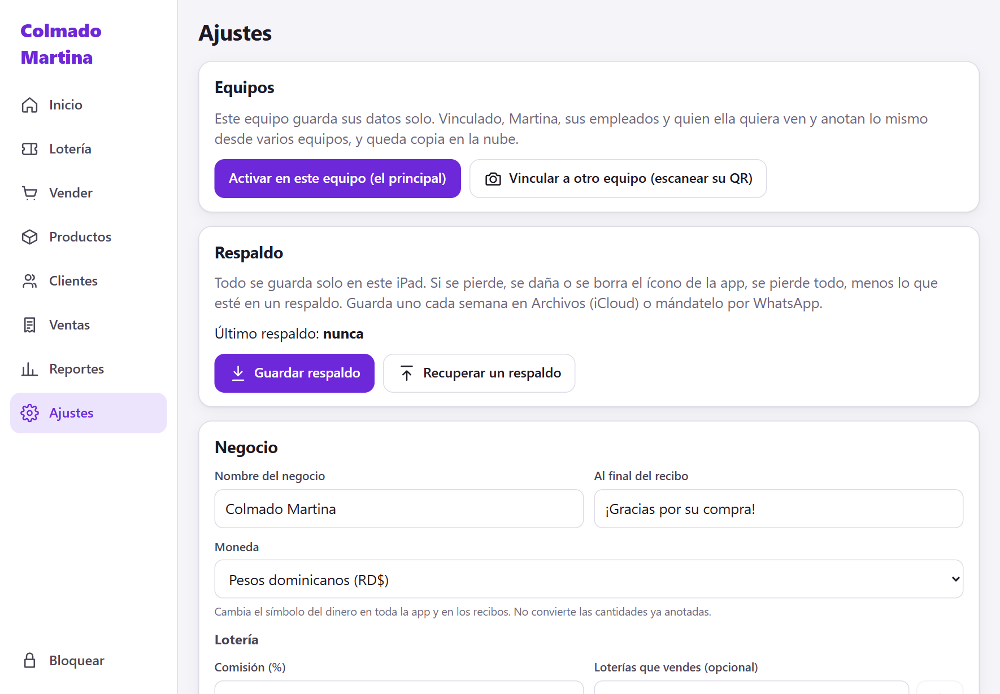
Ajustes del negocio.
Agregar a otra persona
En Seguridad, toca Agregar persona, ponle su nombre, lo que puede hacer y su propio PIN. A quien ya no use la app, la puedes desactivar, y si alguien olvidó su PIN, le pones uno nuevo.
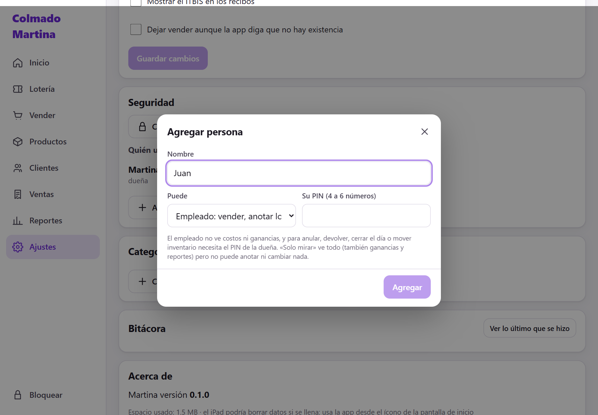
Agregar una persona.
14. Quién puede hacer qué
Dueña
Empleado
Solo mirar
Vender, anotar lotería, pagar premios
Sí
Sí
No
Registrar clientes y abonos
Sí
Sí
No
Ver costos, ganancias y reportes
Sí
No
Sí
Anular, devolver o cerrar el día
Sí
Con PIN de la dueña
No
Reabrir un día cerrado
Sí
No
No
Productos nuevos y mover inventario
Sí
Con PIN de la dueña
No
Mostrar el QR para vincular
Sí
Con PIN de la dueña
Con PIN de la dueña
Ajustes del negocio, personas, respaldo
Sí
No
No
Cuando el empleado necesita algo de la dueña, la app muestra el teclado para que tú pongas tu PIN ahí mismo.
15. Cuidados importantes y preguntas
Abre la app siempre desde el íconoNo desde Safari: Safari guarda sus datos aparte.
No compartas tu PIN ni el QRCon tu PIN se puede anular y cerrar días. Con el QR se entra al negocio.
¿Qué pasa si se me va el internet?
Nada: sigues vendiendo y anotando. Cuando vuelve, se sube solo.
¿Qué pasa si se me pierde o se me daña el iPad?
Si estaba vinculado, todo está en la nube. Instala Martina en el iPad nuevo y vincúlalo con el QR de otro equipo, o, si no tienes otro, con el código que te da Jean Carlos: se baja todo. Desde otro equipo, quita el iPad perdido en Ajustes › Equipos.
¿Puedo borrar el ícono de la app?
Si el equipo está vinculado, se puede volver a vincular y bajar todo. Si no está vinculado, borrar el ícono borra todo: haz un respaldo antes.
Anoté algo mal en la lotería
Mientras el día esté abierto, corrígelo con el lápiz (o anúlalo con la basurita). Si el día ya está cerrado, la dueña lo reabre, lo corrige y lo vuelve a cerrar. También puedes volver a un día anterior con el calendario y anotar lo que faltó.
Se me olvidó el PIN
Si eres empleado, la dueña te pone uno nuevo en Ajustes › Seguridad. Si eres la dueña, avísale a Jean Carlos.